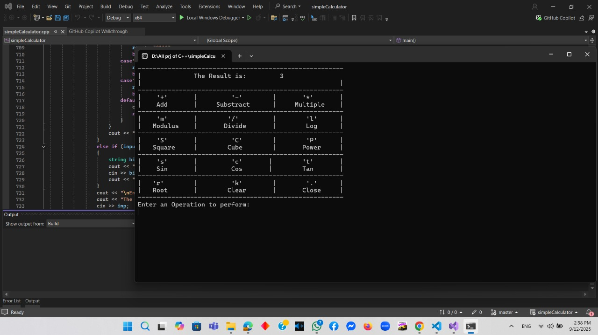
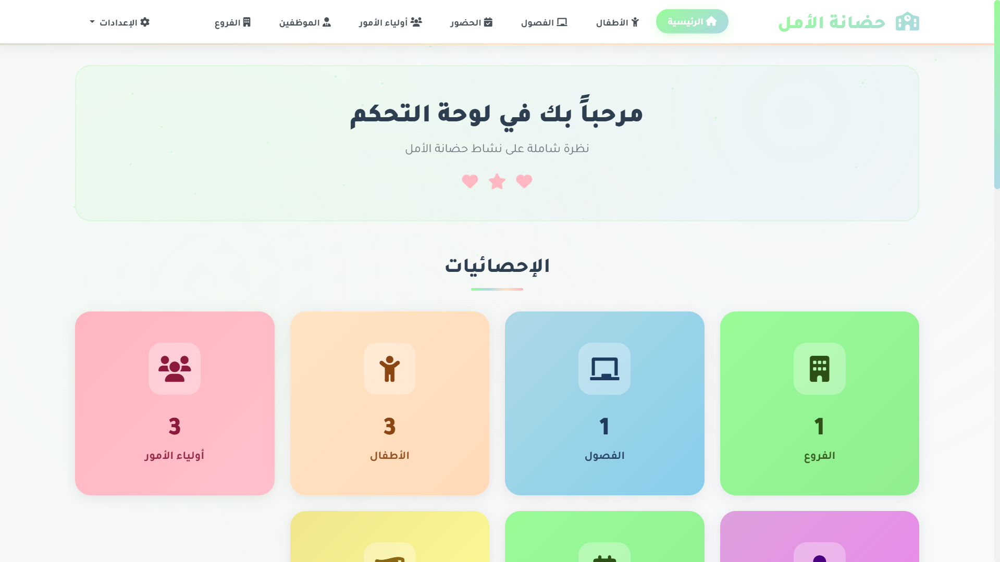
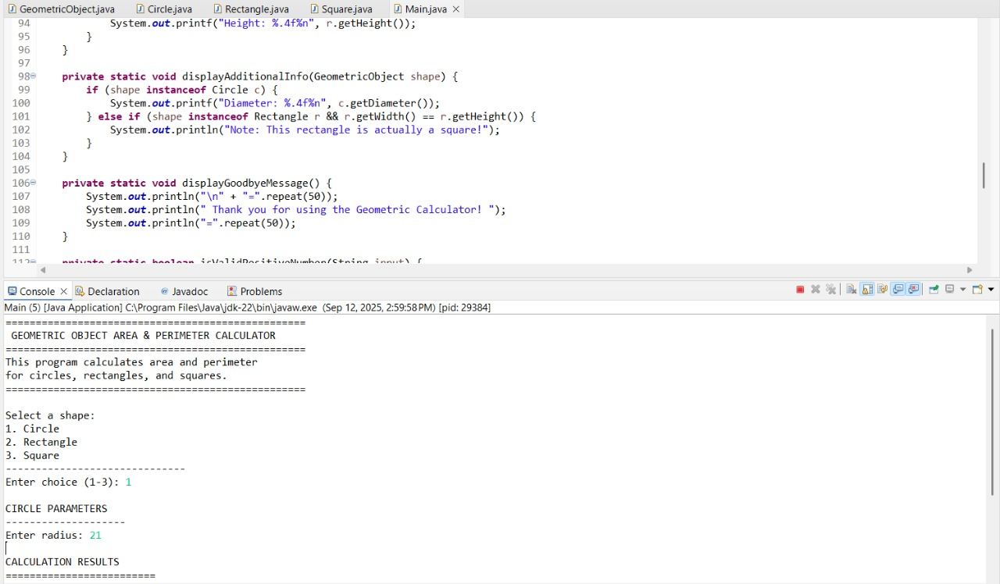

Passionate Computer Science student at Assiut National University with expertise in C++, Java, and Python. I create innovative solutions from crime prevention systems to advanced calculators, combining technical skills with leadership experience as Vice President of FCAI Union.
I'm a dedicated Computer Science student at Assiut National University with a passion for creating innovative software solutions. Currently serving as Vice President of FCAI Union, I combine technical expertise with leadership skills to drive positive change.
My journey in programming started with a curiosity about how technology can solve real-world problems. From developing advanced calculators to exploring data structures, I'm constantly learning and building projects that challenge my skills and expand my knowledge.
When I'm not coding, you'll find me organizing student events, learning new programming languages, or working on collaborative projects that bring value to my community.

A comprehensive C++ calculator supporting both scientific and programmer modes. Features advanced mathematical functions, trigonometric operations, and number system conversions between decimal, binary, hexadecimal, and octal systems.

A comprehensive management system designed for nurseries to efficiently handle student enrollment, attendance tracking, staff management, and parent communication. Features include automated reporting, fee management, and real-time updates for enhanced administrative efficiency.

A Java-based application for calculating areas of various geometric shapes. Features an intuitive user interface, support for multiple shape types, and optimized algorithms for efficient and accurate computations.
Full-stack system for managing course offerings, student enrollments, assignments, and grading. Includes authentication, role-based access control, and REST APIs. Built using Node.js, Express, React, and a SQL database.
A low-level command-line interface built from scratch to mimic basic operating system commands for educational purposes. Supports file creation, reading, and writing operations and demonstrates understanding of OS fundamentals.
Data science project for classifying land types using remote sensing data and machine learning. Performs data preprocessing, model training and evaluation, and visualizes classification results.
Feel free to reach out to me for any collaboration, project discussion, or just to say hello!